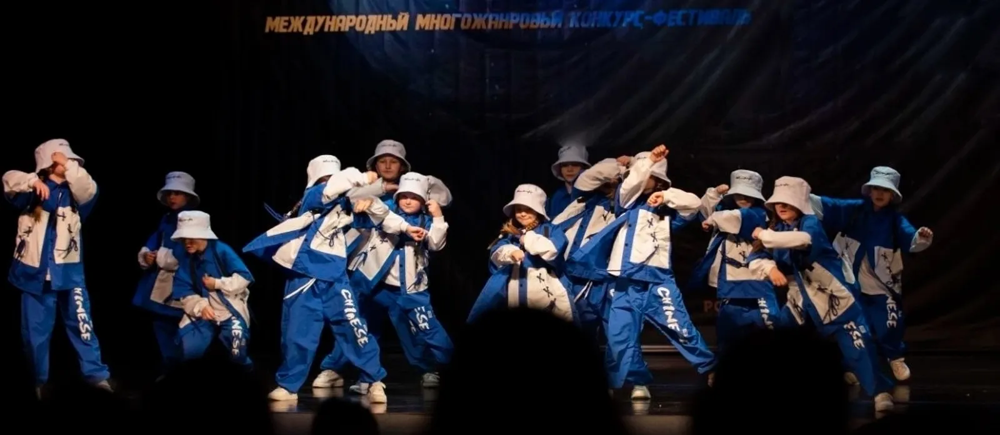
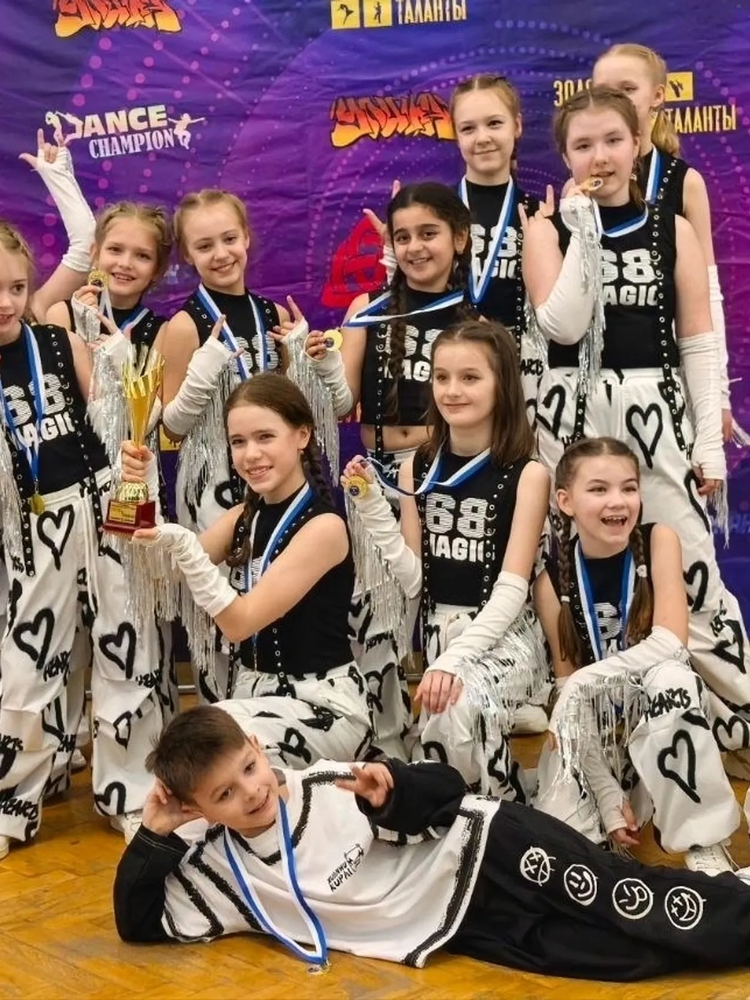
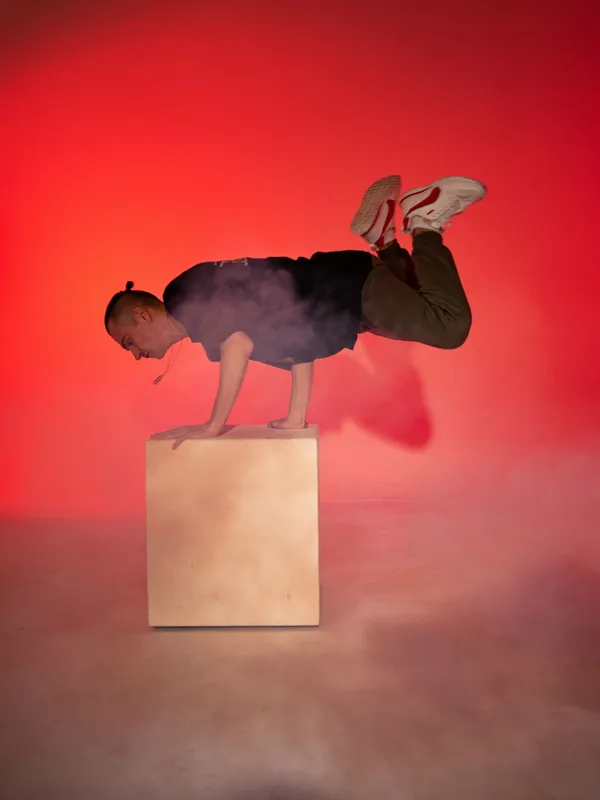
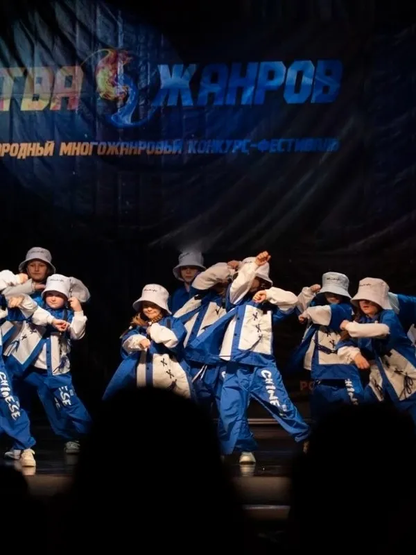
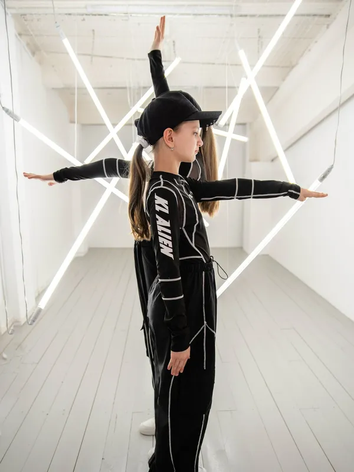
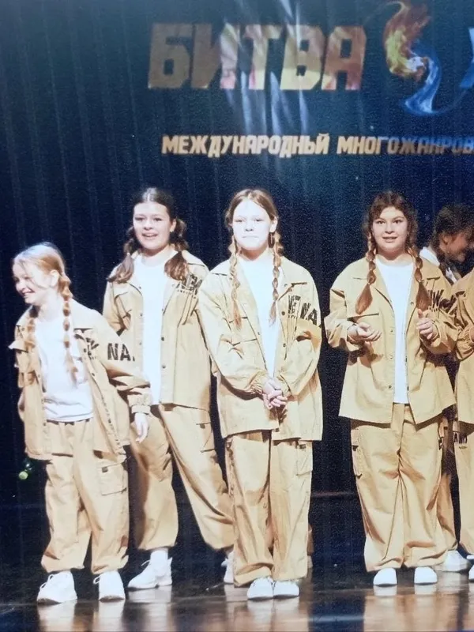
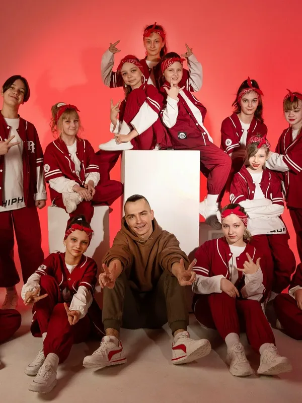
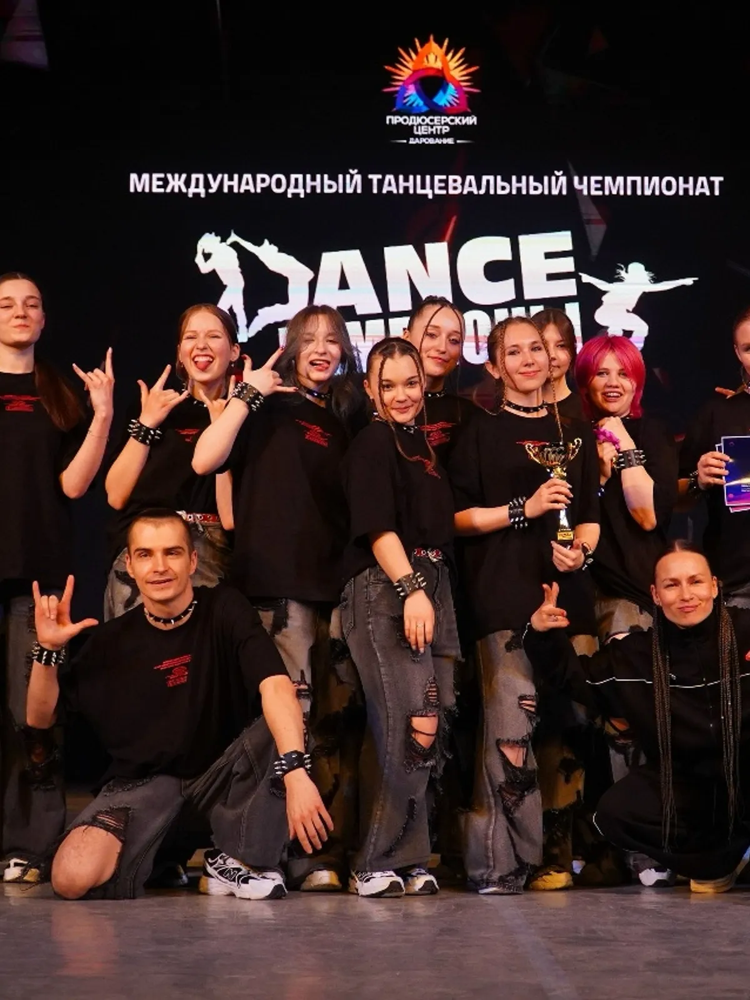
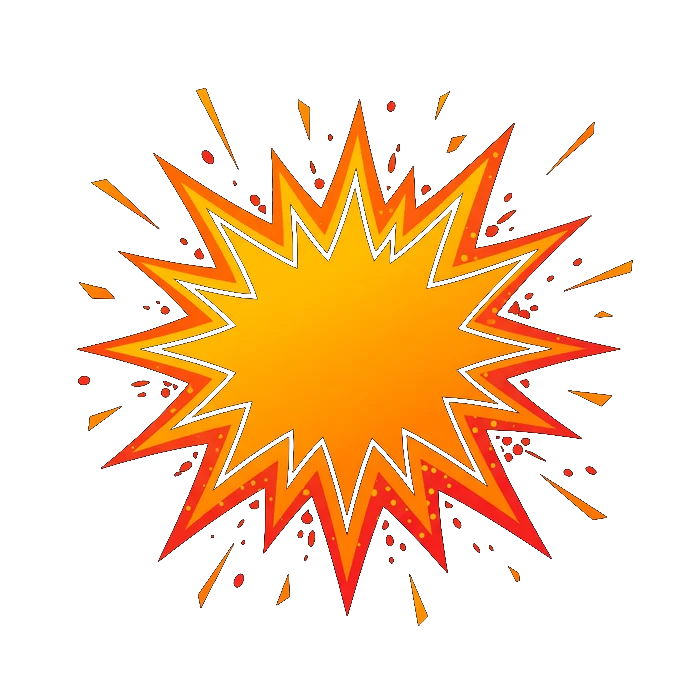
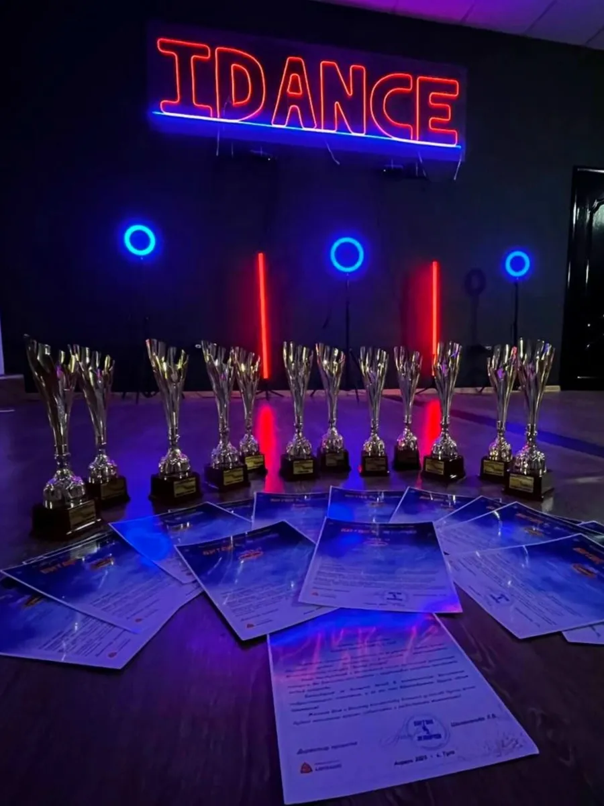

Танцы в Туле для детей и взрослых
От народного до уличного. Группы по возрасту от 4 лет до 20+, для новичков и опытных.
Хочется танцевать, но страшно прийти в первый раз
«Там все уже умеют»
Без опыта кажется, что в зале будете лишним. Поэтому в студии есть группы для новичков отдельно от опытных танцоров.
Непонятно, в какую группу
Ребёнку 6 или 11, взрослому за 20 – у каждого свой темп. Группы собраны по возрастам: 4-6, 7-9, 10-13, 14-17 и 20+ лет.
Не знаю, какой стиль мне подойдёт
Хип-хоп, джаз, хореография, народный танец – в IDANCE многообразие стилей, от народного до уличного. Выбрать поможем.
Начните с первого занятия: индивидуальный подход к каждому, дружный коллектив и позитив. Записаться можно по телефону, в сообщениях группы ВКонтакте или лично Илье Токареву, основателю студии.


Три шага до зала
Опыт не нужен. Расскажите возраст – подскажем подходящую группу.
- 1
Позвоните или напишите
По телефону 8-920-747-15-15, в сообщениях группы ВКонтакте или в личные сообщения Илье Токареву.
- 2
Назовите возраст и стиль, который интересует
Подберём группу: 4-6, 7-9, 10-13, 14-17 лет или 20+. Новичкам – группы для новичков.
- 3
Приходите на первое занятие
Ул. Смидович, 12Б, цокольный этаж. Дружный коллектив и позитив ждут вас.
Условия первого занятия и что взять с собой назовём по телефону при записи.
Из зала – на сцену и на подиум
Ребята студии постоянно участвуют в соревнованиях, а каждое лето выступают в Центральном парке имени Белоусова – об этом пишут родители в отзывах на Яндекс Картах.
Карточки переворачиваются по мере прокрутки: студия, потом сцена
-


«Битва жанров»международный конкурс-фестиваль
-


Постановки командыномера разные по характеру
-

Кубки и грамотыпризовые места на соревнованиях
- Фотографии взяты из группы студии ВКонтакте. Названия конкурсов – с баннеров на снимках.
Найдите группу по возрасту
Стили: хип-хоп, хореография, джаз, народные и другие. Расписание и стоимость абонемента назовём при записи.
- 4-6 летГруппа для самых юных танцоровуточнить
- 7-9 летДля новичков и тех, кто уже занималсяуточнить
- 10-13 летРазные стили, можно выступать с командойуточнить
- 14-17 летПодростковые группы, новички и опытныеуточнить
- 20+ летВзрослые группы, с нуля или с опытомуточнить
Цены и расписание называем по телефону при записи: они зависят от группы.

Илья Токарев
Основатель и руководитель студии. Ставит номера, ведёт команду на соревнования и переживает вместе с ребятами – об этом пишут в отзывах.
- СтудияДесять лет студии – Илья основал её и руководит
- В эфиреРассказал о студии на радио Europa Plus
- НаградыКубки и грамоты студии с соревнований
- СтилиСовременные, hip-hop, джаз, хореография, народные
- О нём говорят родители и ученики
- «Илья отличный хореограф, друг и наставник»
- «Перед соревнованиями Илья дает четкие наставления ребятам»
- «Илья всегда идет на встречу, при решении вопросов»
Что пишут на Яндекс Картах
Отзывы скопированы с карточки на Яндекс Картах без правок.
-
«хожу сюда уже 7 лет, за это время сильно прокачала не только свой уровень танца, но и уверенность в себе»
-
«С самого первого занятия ребенок почувствовал атмосферу дружелюбия и поддержки.»
-
«На занятиях всегда присутствует доброжелательная атмосфера. Индивидуальный подход к каждому ребенку, учитываются возрастные особенности детей.»

Приходите на первое занятие – взрываем танцы вместе
Позвоните, напишите в группу ВКонтакте или лично Илье Токареву. Назовите возраст – подберём группу.
Не любите звонить – пишите в сообщения группы: vk.ru/idance71.
